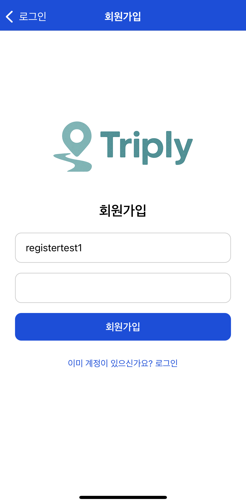
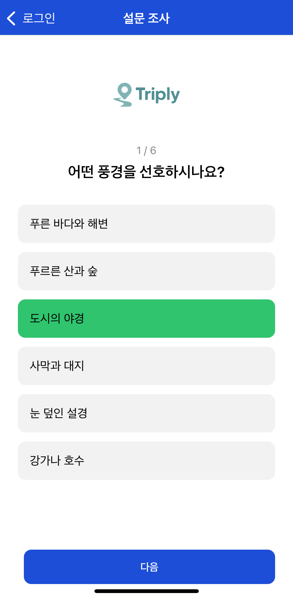
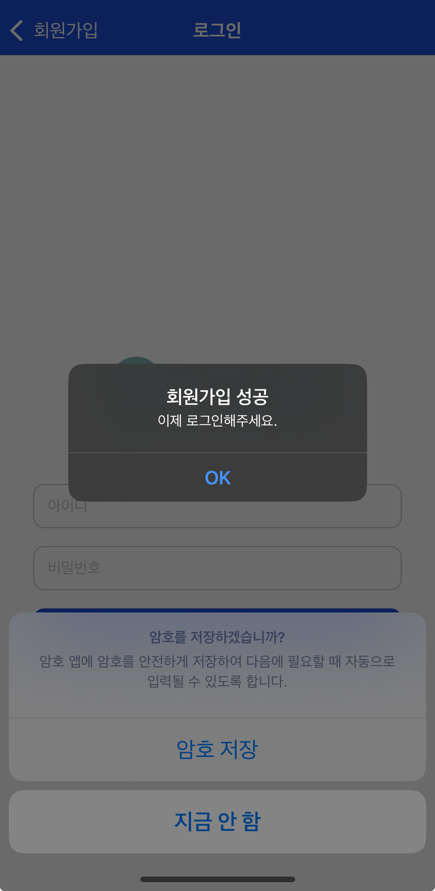
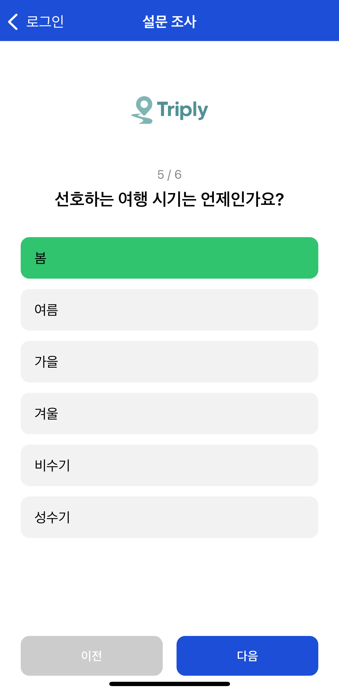
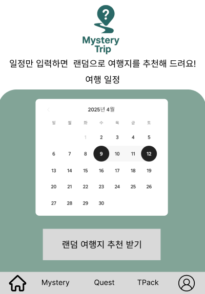
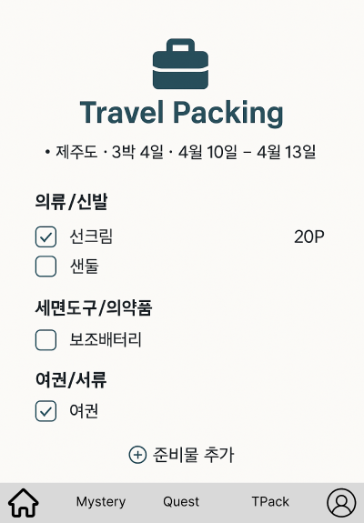

1. 프로젝트 개요
- 프로젝트명: Triply - 사용자 맞춤형 여행지 추천 앱
- 개발 기간: 2023.09 – 진행 중
- 참여 인원: 1명
- 나의 역할: 전체 시스템 아키텍처 설계, 백엔드 개발, 모바일 UI 구현, 설문 알고리즘 및 기능 설계
2. 기술 스택
- 사용 언어: Python, JavaScript (TypeScript)
- 프레임워크: Django, Django REST Framework, React Native (→ Next.js 전환 중)
- 데이터베이스: SQLite (PostgreSQL 예정)
- 개발 도구: Expo, Realm, Gunicorn, Nginx, Visual Studio Code
3. 주요 기능
- 핵심 기능 소개: 사용자 설문 응답 기반 성향 분석을 통해 개인 맞춤형 여행지 추천
- 기술적 차별점: 성향 태그 기반 유사도 알고리즘, 실시간 설문 결과 반영, 다양한 여행 스타일 지원 (랜덤/퀘스트/체크리스트)
- 성능 최적화 내용: 서버 사이드 렌더링 기반 SSR 전환 고려, API 호출 캐싱, Realm 연동을 통한 오프라인 동기화 설계
4. 문제 해결 사례
- 직면한 문제: React Native와 Django 간의 인증 연동 구조 혼란
- 해결 과정: JWT 기반 인증 구조로 전면 재설계, 프론트와 백 간 책임 분리 명확화
- 결과 및 학습점: RESTful API 설계 및 인증 구조에 대한 실무 감각 습득, 앱-서버 간 보안 연동에 대한 이해 향상
📱 주요 기능 목록
- 설문 기반 여행지 추천 시스템
- 여행 퀘스트 & 랜덤 여행
- 출발일 기반 패킹 체크리스트
- 관리자 페이지를 통한 여행지 등록/관리
📸 화면 캡처 및 스케치
     🔍 배운 점
- API 설계 및 DB 모델링 실전 경험
- 모바일 앱과 백엔드 서버 간의 연동 이해
- 사용자 맞춤 알고리즘 설계의 중요성